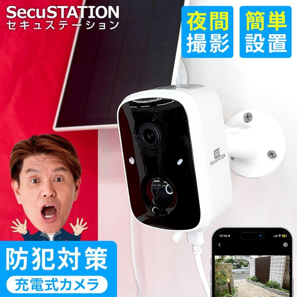
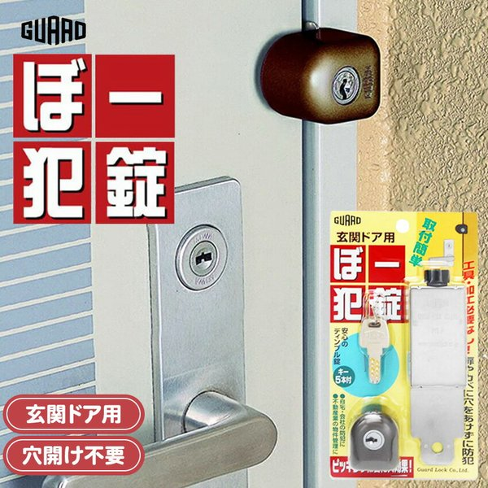
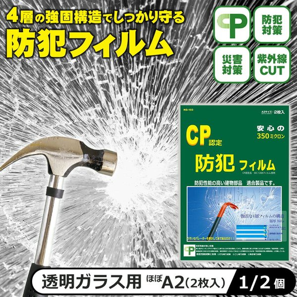
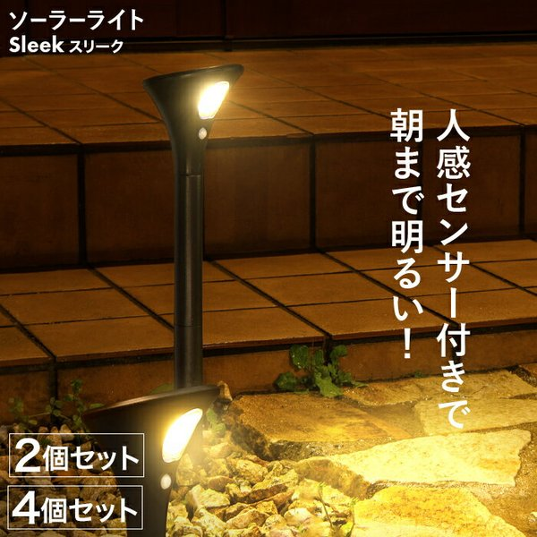
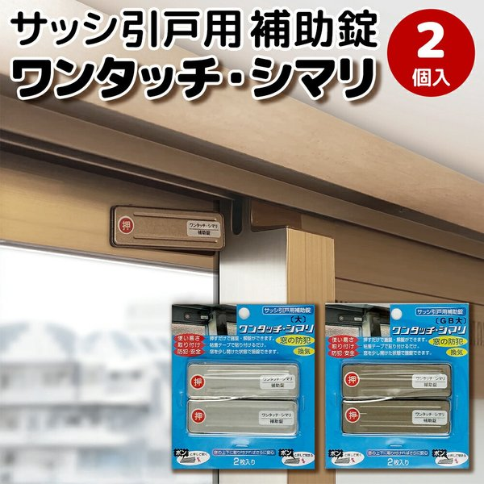
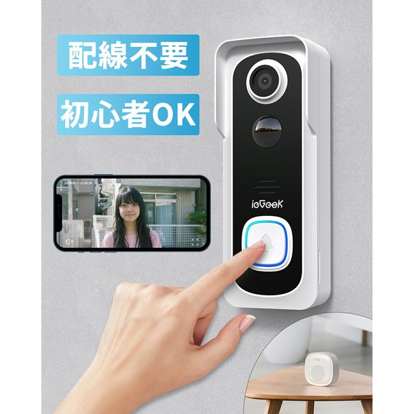
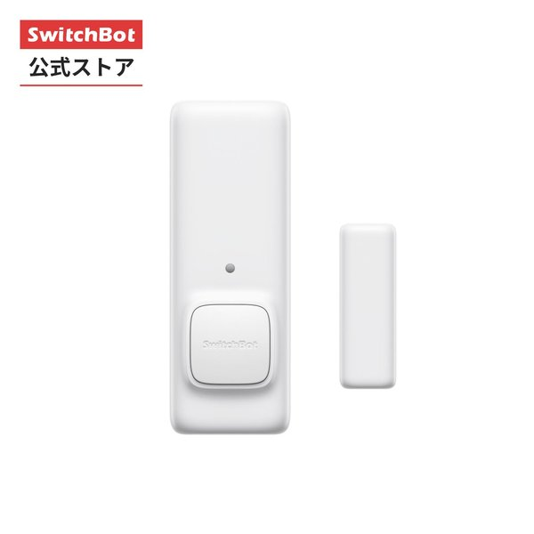
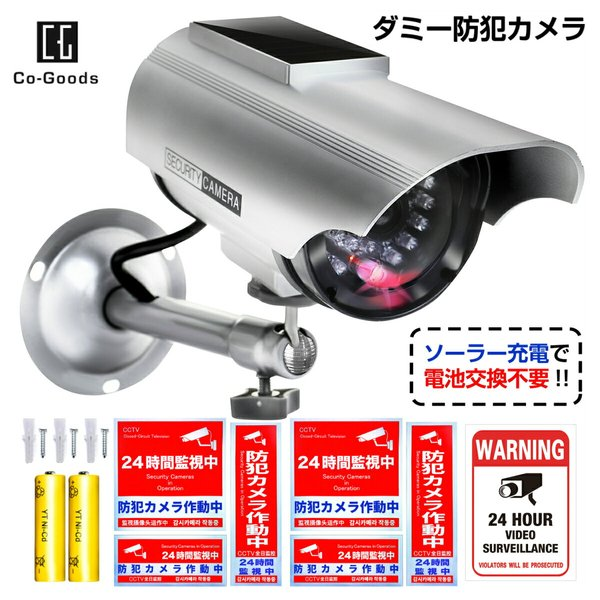
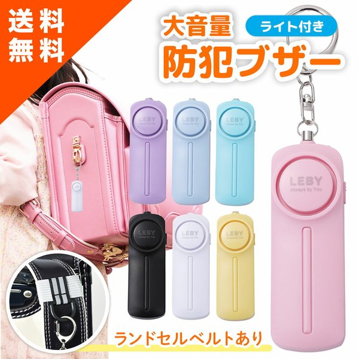

【年末年始の防犯対策】留守を守る！見守りカメラ・センサーライト＆玄関・窓の防犯グッズおすすめ10選
年末年始は、帰省や旅行で家を空ける日が続きます。空き巣は不在の気配を狙うので、郵便物が溜まる、夜に灯りがつかない、という状態が数日続くことがいちばんの隙になります。
対策は2つに分けて考えると揃えやすくなります。ひとつは見える対策で、カメラやセンサーライト、防犯ステッカーなど「監視されている」と示すもの。もうひとつは入りにくくする対策で、補助錠やガラスフィルムのように、破る・開けるのに時間をかけさせるものです。この2つを1つずつ入れておくと、侵入の手口が変わります。カメラは室内と屋外で役割が違い、室内は万が一の確認、屋外は近づいた時点の記録に向いています。
本記事では、楽天市場で人気・高評価の見守りカメラ・センサーライト＆防犯グッズ10選を、実売価格とレビュー評価つきで写真付き紹介します。
- おすすめ10選 スペック・特徴比較表
- BEST 1｜見守りカメラ Tapo 室内用（200万画素・360°首振り）
- BEST 2｜防犯カメラ 屋外 ソーラー充電式（工事不要・夜間カラー）
- BEST 3｜玄関ドア用 補助錠 後付け（ディンプルキー・キー5本）
- BEST 4｜防犯ガラスフィルム CP認定 ほぼA2サイズ 2枚入り（ヘラ付き）
- BEST 5｜ソーラーセンサーライト ポール型 屋外（2個・4個セット）
- BEST 6｜窓・サッシ引戸用 補助錠 ワンタッチシマリ（2個入）
- BEST 7｜ワイヤレスインターホン カメラ付き（300万画素・録画対応）
- BEST 8｜開閉センサー（スマート・Alexa／Google対応）
- BEST 9｜ダミーカメラ 屋外（ソーラーパネル・充電池付き）
- BEST 10｜防犯ブザー 大音量130db（乾電池式・ランドセルベルト付き）
- 【読者負担0円】買わなくても得する無料サービス
- まとめ：防犯グッズ10選の選び方
| 順位 | 商品名 | ブランド | 最大の特徴・おすすめ理由 | 総合評価 |
|---|---|---|---|---|
| BEST 1 | 見守りカメラ Tapo 室内用（200万画素・360°首振り） | TP-Link（Tapo） | 360°首振り＋動体の自動追跡 | 4.61 |
| BEST 2 | 防犯カメラ 屋外 ソーラー充電式（工事不要・夜間カラー） | SecuSTATION（セキュステーション） | ソーラー充電で配線工事が不要 | 4.41 |
| BEST 3 | 玄関ドア用 補助錠 後付け（ディンプルキー・キー5本） | GUARD（ガード） | 穴あけ不要で後付けできる | 4.55 |
| BEST 4 | 防犯ガラスフィルム CP認定 ほぼA2サイズ 2枚入り（ヘラ付き） | アイチ産業 | CP認定の防犯フィルム | 4.59 |
| BEST 5 | ソーラーセンサーライト ポール型 屋外（2個・4個セット） | Sleek（スリーク） | 配線不要で差すだけ | 4.78 |
| BEST 6 | 窓・サッシ引戸用 補助錠 ワンタッチシマリ（2個入） | サッシ引戸用防犯店 | 工具なしで後付けできる | 4.59 |
| BEST 7 | ワイヤレスインターホン カメラ付き（300万画素・録画対応） | ieGeek | 配線不要で設置できる | 4.41 |
| BEST 8 | 開閉センサー（スマート・Alexa／Google対応） | SwitchBot（スイッチボット） | 貼るだけで開閉を検知 | 4.39 |
| BEST 9 | ダミーカメラ 屋外（ソーラーパネル・充電池付き） | Co-Goods | 2,000円以下で数を揃えられる | 4.50 |
| BEST 10 | 防犯ブザー 大音量130db（乾電池式・ランドセルベルト付き） | レイシー（LECY） | 130dbの大音量 | 4.65 |
見守りカメラ Tapo 室内用（200万画素・360°首振り）

スマホから室内を見られる見守りカメラ。360度に首振りし、動くものを自動で追いかけて撮影します。暗い部屋でも赤外線で映るため、留守中の夜間も室内の様子を確認できます。スマホとマイクで会話もでき、ペットや家族の見守りにも使える一台です。楽天市場での実売価格は約4,180円（2026年11月時点）。
- 360°首振り＋動体の自動追跡
- 暗視対応で夜も映る
- レビュー4,300件超・評価4.61
- 電源ケーブルを室内に引き込む場所が必要
防犯カメラ 屋外 ソーラー充電式（工事不要・夜間カラー）

太陽光パネルで充電して動く屋外カメラ。コンセントのない軒下や駐車場にも、穴をあけずに取り付けられます。夜間もカラーで撮影でき、スマホから映像を見ながら双方向で会話できます。録画はメモリーカードに保存するタイプで、留守中の玄関先や庭をあとから確認できます。楽天市場での実売価格は約9,999円（2026年11月時点）。
- ソーラー充電で配線工事が不要
- 夜間もカラー撮影できる
- レビュー4,900件超・評価4.41
- 日当たりの悪い場所では充電が不足しやすい
玄関ドア用 補助錠 後付け（ディンプルキー・キー5本）

玄関ドアの内側に取り付ける後付けの補助錠。穴をあけずに固定でき、賃貸でも原状回復しやすいのが利点です。ディンプルキー仕様で鍵の複製が難しく、キーは5本付属します。サムターンが回されても内側から補助錠がかかっていれば開きにくくなるため、留守中の侵入への抑止になります。楽天市場での実売価格は約6,025円（2026年11月時点）。
- 穴あけ不要で後付けできる
- ディンプルキーで複製されにくい
- レビュー65件・評価4.55
- ドアの形状によっては取り付け位置が限られる
防犯ガラスフィルム CP認定 ほぼA2サイズ 2枚入り（ヘラ付き）

ガラス破り対策の防犯フィルム。CPマーク（防犯性能）認定品で、窓ガラスに貼ると割れたガラスが飛び散りにくくなり、侵入に時間がかかります。ほぼA2サイズが2枚入り、貼り付け用のヘラ付きで、施工業者に頼まずに貼れます。透明なので、外観を変えずに窓の強度を上げられます。楽天市場での実売価格は約7,030円（2026年11月時点）。
- CP認定の防犯フィルム
- 透明で見た目が変わらない
- レビュー180件・評価4.59
- 貼る前に窓ガラスの汚れを落とし、空気を抜く作業が要る
ソーラーセンサーライト ポール型 屋外（2個・4個セット）

庭やアプローチに差すだけで設置できるポール型のソーラーライト。人感センサーが反応すると明るく点灯し、暗い場所に人が近づいたことを知らせます。配線不要で防水仕様のため、玄関までの通路や物置の前など、照明が届いていなかった場所に置けます。楽天市場での実売価格は約4,980円（2026年11月時点）。
- 配線不要で差すだけ
- 人感センサーで必要なときだけ点灯
- レビュー468件・評価4.78
- 日照時間が短い時期は点灯時間が短くなる
窓・サッシ引戸用 補助錠 ワンタッチシマリ（2個入）

サッシの引戸や滑り出し窓に後付けする補助錠。レバーを回すだけで施錠でき、補助錠が1つ付いているだけで引戸を少し開けて手を入れる手口を防げます。2個入りなので、リビングと寝室の窓に1つずつ付けられます。1,580円で、まず1階の窓から始めたい人に向いています。楽天市場での実売価格は約1,580円（2026年11月時点）。
- 工具なしで後付けできる
- 2個入りで複数の窓に使える
- レビュー352件・評価4.59
- サッシの形状によっては取り付けられない場合がある
ワイヤレスインターホン カメラ付き（300万画素・録画対応）

配線不要で取り付けられるカメラ付きのワイヤレスインターホン。玄関先に来た人をスマホで確認でき、不在時も録画が残ります。300万画素の画素数のため、訪問者の顔や手元の荷物まで判別しやすいのが利点です。工事不要で、賃貸の玄関にも設置できます。楽天市場での実売価格は約4,999円（2026年11月時点）。
- 配線不要で設置できる
- 300万画素で顔まで確認しやすい
- 不在時も録画が残る
- レビュー111件と、実績はまだ少なめ
開閉センサー（スマート・Alexa／Google対応）

ドアや窓、引き出しに貼り付けて開閉を検知する小型センサー。開いた瞬間にスマホへ通知が届くので、留守中の勝手口や、家族が帰宅したタイミングを離れた場所から知れます。AlexaやGoogle Homeと連携でき、他の家電と組み合わせた自動化も設定できます。両面テープで貼るだけの設置です。楽天市場での実売価格は約3,980円（2026年11月時点）。
- 貼るだけで開閉を検知
- スマホに通知が届く
- Alexa・Google Homeと連携できる
- 単体では録画や撮影はできないので、カメラと組み合わせたい
ダミーカメラ 屋外（ソーラーパネル・充電池付き）

本物の防犯カメラに似た外観のダミーカメラ。ソーラーパネルと充電池が付き、夜間はLEDが光るため、遠目には作動中のカメラに見えます。1,980円と手頃で、防犯ステッカーも付属します。本物のカメラを置く前の抑止として、あるいは物置や裏口など本数を揃えたい場所に向いています。楽天市場での実売価格は約1,980円（2026年11月時点）。
- 2,000円以下で数を揃えられる
- 夜間にLEDが光る
- 防犯ステッカー付き
- 録画はできないので、本物のカメラとの併用が前提
防犯ブザー 大音量130db（乾電池式・ランドセルベルト付き）

引っ張るだけで130dbの大音量が出る防犯ブザー。乾電池式なので充電切れの心配がなく、電池を入れ替えれば繰り返し使えます。ランドセルのベルトに通せる金具が付き、通学用として使えます。単3電池式で、防犯ブザーは定期的な電池確認が欠かせませんが、その点も管理しやすい仕様です。楽天市場での実売価格は約1,000円（2026年11月時点）。
- 130dbの大音量
- 乾電池式で電池切れに気づきやすい
- レビュー1,500件超・評価4.65
- 電池の残量を定期的に確認する必要がある
この記事の商品を買う前に、まずは無料で得する選択肢をチェック。どれも登録・利用は0円で、無料期間中に解約すれば料金はかかりません。読みたい雑誌がある人、ポイントを貯めたい人、アンケートなら気軽という人、それぞれに合うものを選べます。
初回31日無料・無料期間中に解約すれば0円 → 楽天ポイントモール｜登録無料で毎日ポイ活
買い物なしでもポイントが貯まる無料サービス → 楽天インサイト｜アンケートに答えてポイント
登録無料・すきま時間のアンケートで貯まる → 楽天カード｜年会費永年無料
新規発行・年会費ずっと0円 →
4つのサービスの違いと使い分けは「出費0円で得する！買わずにポイントが貯まる無料サービス厳選4選」でまとめています。
💡 まとめ：防犯グッズ10選の選び方
年末年始の防犯は、家を空ける前に「入りにくさ」と「見える化」を1つずつ足すのが基本です。玄関は後付けの補助錠、1階の窓はCP認定のガラスフィルムかサッシ用の補助錠。外まわりは、配線不要のソーラーカメラかポール型のセンサーライトを玄関側に置くと、近づいた時点で気づけます。室内は見守りカメラで、留守中の様子と帰宅後の確認ができます。長期で空けるなら、ドアの開閉を知らせるセンサーと、訪問者をスマホで見られるインターホンを足すと安心です。取り付けたあとは、電池と録画の設定を出発前に一度確認しておきましょう。
楽天市場では「5と0のつく日」や「お買い物マラソン」などのキャンペーンに合わせて購入すると、ポイント還元が最大化してお得に手に入ります。ぜひチェックしてみてくださいね。